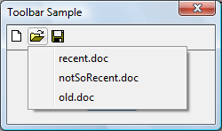

A drop-down button can present users with a list of options. To create this style of button, specify the BTNS_DROPDOWN style (also called TBSTYLE_DROPDOWN for compatibility with previous versions of the common controls). To show a drop-down button with an arrow, you must also set the TBSTYLE_EX_DRAWDDARROWS toolbar style by sending a TB_SETEXTENDEDSTYLE message.
The following illustration shows a drop-down "Open" button with the context menu open and showing a list of files. In this example, the toolbar has the TBSTYLE_EX_DRAWDDARROWS style.
The following illustration shows the same toolbar, this time without the TBSTYLE_EX_DRAWDDARROWS style.

When users click a toolbar button that uses the BTNS_DROPDOWN style, the toolbar control sends its parent window a TBN_DROPDOWN notification code.
The following code example demonstrates how an application can support a drop-down button in a toolbar control.
BOOL DoNotify(HWND hwnd, UINT msg, WPARAM wParam, LPARAM lParam)
{
#define lpnm ((LPNMHDR)lParam)
#define lpnmTB ((LPNMTOOLBAR)lParam)
switch(lpnm->code)
{
case TBN_DROPDOWN:
{
// Get the coordinates of the button.
RECT rc;
SendMessage(lpnmTB->hdr.hwndFrom, TB_GETRECT, (WPARAM)lpnmTB->iItem, (LPARAM)&rc);
// Convert to screen coordinates.
MapWindowPoints(lpnmTB->hdr.hwndFrom, HWND_DESKTOP, (LPPOINT)&rc, 2);
// Get the menu.
HMENU hMenuLoaded = LoadMenu(g_hinst, MAKEINTRESOURCE(IDR_POPUP));
// Get the submenu for the first menu item.
HMENU hPopupMenu = GetSubMenu(hMenuLoaded, 0);
// Set up the pop-up menu.
// In case the toolbar is too close to the bottom of the screen,
// set rcExclude equal to the button rectangle and the menu will appear above
// the button, and not below it.
TPMPARAMS tpm;
tpm.cbSize = sizeof(TPMPARAMS);
tpm.rcExclude = rc;
// Show the menu and wait for input.
// If the user selects an item, its WM_COMMAND is sent.
TrackPopupMenuEx(hPopupMenu,
TPM_LEFTALIGN | TPM_LEFTBUTTON | TPM_VERTICAL,
rc.left, rc.bottom, g_hwndMain, &tpm);
DestroyMenu(hMenuLoaded);
return (FALSE);
}
}
return FALSE;
}
Windows common controls demo (CppWindowsCommonControls)
Â
Â